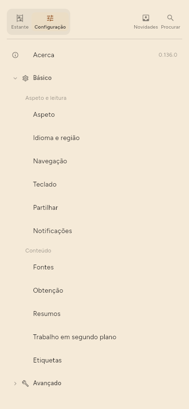

← Teclado · Índice · Onde ficam as coisas →
Referência da configuração
A Configuração está no fundo da estante. As suas páginas estão em dois grupos: Básico, as que a maioria das pessoas muda, e Avançado, as restantes. Acerca fica à parte, por baixo deles.

Básico
- Aspeto — tema, texto, a lista, o artigo e a disposição.
- Idioma e região — o idioma da interface, e a forma de escrever datas e horas.
- Navegação — quando um artigo aberto conta como lido, os gestos de deslizar, e se a estante é uma barra lateral ou fica escondida.
- Teclado — a lista de atalhos.
- Partilhar — o que uma partilha envia.
- Notificações — anúncios e avisos.
- Fontes — tudo o que segue, com o filtro, as caixas de seleção e as ações em massa descritas em Gerir fontes, e a ordem em que a lista é mantida.
- Obtenção — com que frequência verificar, em que ligações e com bateria, e quantas fontes de cada vez.
- Resumos — se os resumos são escritos, onde, quantos de cada vez e por verificação, o idioma dos resumos e as etiquetas sugeridas.
- Trabalho em segundo plano — o que a faixa de estado mostra enquanto a aplicação trabalha e, num telemóvel, Configuração › Básico › Trabalho em segundo plano › Com o ecrã desligado › Continuar a trabalhar com o ecrã desligado, que mantém as verificações, os resumos, as transferências de modelos e a sincronização a correr depois de o ecrã se desligar.
- Etiquetas — o vocabulário: todas as etiquetas, para mudar o nome, juntar ou remover.
Vale a pena conhecer Configuração › Básico › Navegação › Marcar como lido: Nunca quer dizer que só o utilizador marca as coisas como lidas, Imediatamente quer dizer que abrir conta, Após alguns segundos quer dizer que passar de relance não conta, e Quando chega ao fim espera pelo fundo do artigo. As duas últimas marcam um artigo uma só vez de cada vez que o abre, e uma marca feita à mão, lido ou por ler, vale até voltar a abrir o artigo.
Avançado
- Modelo no dispositivo — os modelos neste dispositivo e a procura de novos, e o processador em que um modelo corre.
- Servidor LLM — o endereço, o modelo e a chave de um servidor que faz resumos.
- Sincronização — sincronização ligada ou desligada, o endereço do servidor, quando corre sozinha, se este dispositivo guarda tudo, outro dispositivo, o código de recuperação, e apagar a cópia no servidor.
- Contas — os sites em que este dispositivo tem sessão iniciada, quando a versão permite iniciar sessão.
- Tokens e API e MCP — só na Premium, porque as três portas também são: uma versão gratuita não tem o separador nem as portas, em vez de ter interruptores que recusam.
- Os seus dados — exportar, importar, cópia de segurança e reposição, fontes duplicadas, quanto tempo se guardam o texto e as imagens dos artigos, e a cópia de segurança do sistema.
- Estatísticas — o que os resumos gastaram e o que a biblioteca contém.
- Depuração — o registo de atividade: tudo o que correu e tudo o que falhou, o primeiro sítio onde procurar quando algo não aconteceu.
- Desenvolvimento — Preencher os detalhes em falta, que volta a obter metadados, uma comparação de modelos, experiências, e Apagar tudo.
API e MCP (só Premium)
Três portas, cada uma com a sua porta de rede, a sua escolha dos endereços em que responde, o seu token e o seu interruptor: a API REST, por onde uma extensão do navegador ou outro programa introduz coisas, Métricas para um sistema de monitorização, e MCP, em que um modelo responde. Começam em 8765, 8766 e 8767, e nenhuma precisa de outra aberta.
Um token abre só aquilo para que está marcado, em Configuração › Avançado › Tokens › Tokens › Editar permissões. As permissões estão recolhidas por tema, e o campo acima filtra-as por nome ou descrição. As predefinições preenchem as marcas: Tudo menos remoções, Só leitura, Extensão do navegador, que marca exatamente o que a extensão do navegador usa, e Nada.
Usar TLS (HTTPS), por baixo das três portas, está desligado por omissão e passa as três para HTTPS de uma vez. Da primeira vez, a aplicação cria um certificado para este dispositivo, com o nome do anfitrião e os seus endereços, e guarda a chave junto dos outros segredos. Os clientes têm então de usar https:// e confiar nesse certificado: a página mostra a impressão digital SHA-256, com um botão para a copiar, para que um cliente a possa fixar. Certificado novo cria outro, e todos os clientes que fixaram a impressão digital antiga têm de receber a nova. O wrapper de linha de comandos do MCP apanha o certificado sozinho; reinicie o cliente dele depois de um novo certificado.
O leitor de terminal não é uma destas portas. Abre diretamente o ficheiro da biblioteca, não precisa de nenhuma porta aberta e é gratuito.
Os seus dados
Exportar e Importar, uma secção cada: OPML para as fontes, e a sua biblioteca completa. Cópia de segurança e reposição copia a biblioteca inteira para um ficheiro e de volta; Configuração › Avançado › Os seus dados › Cópia de segurança e reposição › Incluir inícios de sessão e tokens, desligado de cada vez, acrescenta a sessão de cada conta e cada token, cifrados com uma frase-passe que escreve duas vezes. Esse ficheiro e a sua frase-passe, juntos, iniciam sessão nessas contas. Uma reposição pede a frase-passe; uma errada ou esquecida repõe na mesma a biblioteca e deixa as sessões deste dispositivo como estavam. Há também Configuração › Avançado › Os seus dados › Fontes duplicadas, que procura o mesmo canal seguido em dois endereços e oferece juntar os pares que encontra.
Acerca
Versão, as licenças de código aberto, a política de privacidade, a licença de utilizador final e os termos. No Linux, Procurar atualizações. A política de privacidade, a licença e os termos abrem dentro da aplicação, a partir da cópia com que a aplicação foi construída, por isso funcionam sem ligação. Open on the site nessa página mostra a versão mais recente no navegador (Configuração › Acerca › Política de privacidade, e o mesmo para as outras duas).